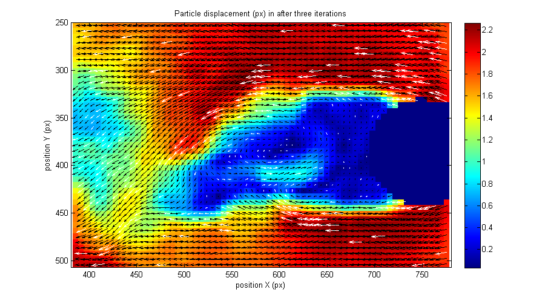

Example 03 - Advanced usage of PIVsuite
This example demonstrates the advanced usage of PIVsuite for obtaining the velocity field from a pair of images. Contrary to the previous example (example_02_Image_pair_standard.m), additional parameters (affecting vector validation, smoothing of the velocity field, window function) are set by user.
Contents
- Define images to be treated and mask
- Image preprocessing
- Interrogation grid and cross-correlation settings
- Vector validation settings
- Vector smoothing settings
- Set remaining parameters and run the analysis
- Visualize the velocity field
- Show cross-correlation level
- Show detectability of cross-correlation peak
Define images to be treated and mask
Begining is the same as in example_01...:
clear; pivPar = []; % variable for settings pivData = []; % variable for storing results im1 = ['..',filesep,'Data',filesep,'Test von Karman',filesep,'PIVlab_Karman_01.bmp']; im2 = ['..',filesep,'Data',filesep,'Test von Karman',filesep,'PIVlab_Karman_02.bmp']; imMask = ['..',filesep,'Data',filesep,'Test von Karman',filesep,'PIVlab_Karman_mask.png']; pivPar.imMask1 = imMask; % mask for first image pivPar.imMask2 = imMask; % mask for the second image
Image preprocessing
The images treated in this example are not very homogenous. This can be improved by image preprocessing using MinMax filter, which makes the images more uniform:
pivPar.iaPreprocMethod = 'MinMax'; % include image preprocessing by local MinMax filter pivPar.iaMinMaxSize = 9; % set kernel size of MinMax filter pivPar.iaMinMaxLevel = 16; % set minimal level, below which the contrast is not improved
The iaPreprocMethod can have values 'none' (default) and 'MinMax'. In the latter case, local contrast in the images are equalized using MinMax filter. Two other parameters are then applicable: iaMinMaxSize, specifying the kernel size of the equalization filter, and iaMinMaxLevel, which defines the lower limit of local contrast, below which it is not improvet anymore. These two parameters has default values 7 and 16, respectively.
Interrogation grid and cross-correlation settings
Set the size and spacing of interrogation areas (number of elements defines number of passes):
pivPar.iaSizeX = [24 24 24]; % size of interrogation area in X pivPar.iaStepX = [24 12 6]; % grid spacing of velocity vectors in X
If iaSizeY and iaStepY are not set, same values as for X will be used. Values do not need to be powers of 2.
Set the windowing function:
pivPar.ccWindow = 'Gauss2'; % This filter is relatively narrow and will % help measure velocities in middle of IA's % even for large IA'a
Possible values for ccWindow are 'uniform', 'Welch', 'palzer', 'Nogueira', 'Hanning', 'Hanning2', 'Hanning4', 'Gauss', 'Gauss2' and 'Gauss4'. Windows 'Hanning2' and 'Hanning4' are second and fourth power of the common Hanning window (thus narrower than 'Hanning'). Similarly, 'Gauss2' and 'Gauss4' are Gauss filters, but with width of 1/sqrt(2) and 1/2 of that of standard Gaussian window. The default value is 'Welch'.
Set the cross-correlation method:
pivPar.ccMethod = 'fft';
The parameter ccMethod can be either 'fft' (cross-correlation computed using fast Fourrier transform) or 'dcn'(cross-correlation evaluated using convolution). The latter method is suitable for final terations, as it is sligthly faster if the displacement is small. Default setting is 'fft' for first iterations, and 'dcn' for final iterations. In this example, we use 'fft' as we will examine the peak detectability (ths is not possible with the 'dcn' algorithm).
Vector validation settings
Two validation steps are implemented. In the first step, interrogation areas with low value of cross-correlation (compared to median cross-correlation) are rejected. The treshold is given by
pivPar.vlMinCC = 0.3; % reject all vectors with normalized % cross-correlation smaller than 0.3 of median
By setting pivPar.vlMinCC = 0, this validation is skipped. The default value is vlMinCC = 0.3.
In the second validation step, common floating-median filter is applied (see Westerweel, Exp in Fluids, 2005). Contrary to the original filter, the validation can have several passes (spurious vvectors are not considered in vectors statistics in the next pass), and the size of neighbourhood can be also adjusted. The validation step has the following parameters:
pivPar.vlPasses = [1 1 2]; % number of passes pivPar.vlDist = 3 ; % distance, to which vectors are included in the local % statistics (vlDist = 2 stays for 5x5 vector neighborhood pivPar.vlTresh = 2; % threshold value pivPar.vlEps = 0.08; % allowed errors
The default values are vlPasses = 1, vlDist = 2, vlTresh = 2 and vlEps = 0.15.
Note: All parameters can be either scalars or vectors. If scalars, they are applied to all passes. If a parameter is a vector, the parameter is different for each pass of PIV evaluation.
Vector smoothing settings
There are two methods, which can be used for smoothing: floating gaussian filter, and subroutine smoothn.m written by Damien Garcia. The setting is the following:
pivPar.smMethod = 'smoothn'; % choose the method (possible values 'none', 'Gauss', 'smoothn') pivPar.smSigma = 0.1; % larger value means smoother results; NaN stays for automatic setting % pivPar.smSize = 5; % size of the smoothing filter (applies only to % gaussian filter)
Default values are smMethod = 'smoothn' with smSigma = NaN.
Set remaining parameters and run the analysis
During evaluation, velocity magnitude will be shown, marking all location of spurious vectors by a dot. All other parameters are set to defaults.
% show velocity magnitude and location of invalid vectors during iteration pivPar.qvPair = {'Umag','invLoc'}; figure(1); % set remaining parameters [pivPar1, pivData] = pivParams(pivData,pivPar,'defaults'); % run the analysis [pivData1] = pivAnalyzeImagePair(im1,im2,pivData,pivPar1);

Continue the analysis by additional two iterations:
% set parameters different to previous treatment pivPar.iaSizeX = [24 24]; % size of interrogation area in X pivPar.iaStepX = [ 6 6]; % grid spacing of velocity vectors in X pivPar.vlPasses = 1; % number of validation passes % continue the iterations figure(1); [pivPar2, pivData] = pivParams(pivData,pivPar,'defaults'); [pivData2] = pivAnalyzeImagePair(im1,im2,pivData1,pivPar2);

Visualize the velocity field
Show a magnified detail of flow around the cylinder. Color of velocity vectors can be set differently for valid and replaced spurious vectors:
% velocity field after two iterations figure(2); pivQuiver(pivData1,... 'crop',[380,780,250,510],... % set cropping 'Umag',... % show background with magnitude 'quiver','selectStat','valid','linespec','-k',... ... % show quiver of valid vectors in black 'quiver','selectStat','replaced','linespec','-w'); ... % show quiver of replaced vectors in white title('Particle displacement (px) in after three iterations'); xlabel('position X (px)'); ylabel('position Y (px)');
% velocity field after five iterations figure(3); pivQuiver(pivData2,... 'crop',[380,780,250,510],... % set cropping 'Umag',... % show background with magnitude 'quiver','selectStat','valid','linespec','-k',... ... % show quiver of valid vectors in black 'quiver','selectStat','replaced','linespec','-w'); ... % show quiver of replaced vectors in white title('Particle displacement (px) after five iterations'); xlabel('position X (px)'); ylabel('position Y (px)');
% Get velocity profiles at x = 600... y = (180:580)'; x = 600 + zeros(size(y)); u1 = interp2(pivData1.X,pivData1.Y,pivData1.U,x,y); u2 = interp2(pivData2.X,pivData2.Y,pivData2.U,x,y); % ... and plot themplot velocity profile figure(4); plot(u1,y,'-b',u2,y,'-r'); title('U profile at X = 6000 px'); xlabel('particle displacement U (px)'); ylabel('position Y (px)'); legend('3 iterations','5 iterations');
In this example, we will show also the velocity components "as seen by the flow" (that is in a frame of reference moving together with the incoming air). For this purpose, compute the mean velocity in the right part of the velocity field, and when displaying the velocity, subtract it.
% Compute the mean velocity on the rigth of the image (mean velocity of incoming air) Umean = mean(mean(pivData2.U(:,end-5:end-1))); Vmean = mean(mean(pivData2.V(:,end-5:end-1))); % show U component figure(5); pivQuiver(pivData2,... 'crop',[-Inf,Inf,88,680],... 'U','subtractU',Umean); title('Horizontal displacement U (px) in a flow around a cylinder (moving frame of reference)'); xlabel('position X (px)'); ylabel('position Y (px)'); % show V component figure(6); pivQuiver(pivData2,... 'crop',[-Inf,Inf,88,680],... 'V','subtractU',Vmean); title('Vertical displacement V (px) in a flow around a cylinder (moving frame of reference)'); xlabel('position X (px)'); ylabel('position Y (px)');
Note the Y coordinate is increasing in downward direction in PIVsuite, and hence also the velocity component V is positive for downward flow.
Show cross-correlation level
The value at the cross-correlation peak (CCP) is stored in the field ccPeak and can be displayed by pivQuiver. The CCP is lower in the cylinder wake, where the correlation is lost due to out-of-plane flow and strong velocity gradients, and also in the shadow of the cylinder.
% Show level of cross-correlation peak figure(7); pivQuiver(pivData2,'ccPeak','clipHi',1,'clipLo',0.3); title('Maximum normalized cross-correlation (a.u.)'); xlabel('position X (px)'); ylabel('position Y (px)');
Show detectability of cross-correlation peak
The peak detactibility is the ratio of the primary cross-correlation level to the level of the secondary peak. The low detectability (close to one) indicated that there is not a clearly defined particle displacement, for which both images coincide. In this example, the detectability is low both in the cylinder wake and in the non-uniforly illuminated are top-rigth to the cylinder.
% Shot detectability of cross-correlation peak figure(8); pivQuiver(pivData2,'ccDetect','clipLo',1.3,'clipHi',3); title('Cross-correlation peak detectability (a.u.)'); xlabel('position X (px)'); ylabel('position Y (px)');
Note: The detectability can be shown only if ccMethod is set to 'fft'.